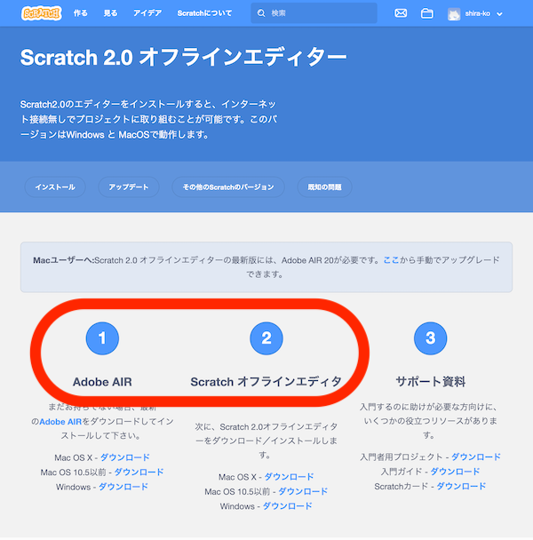
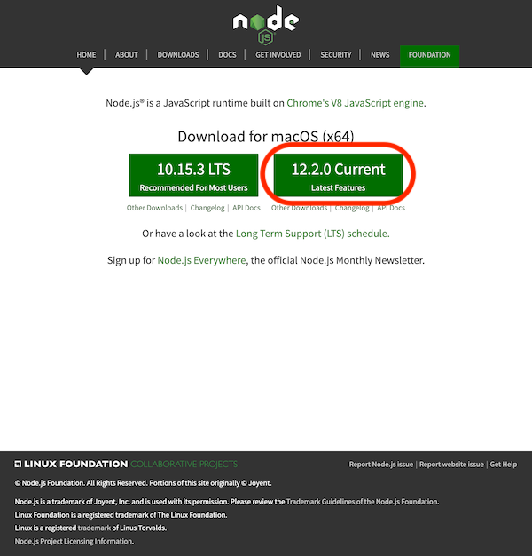
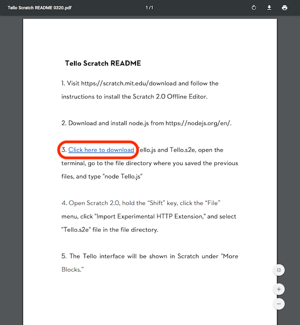
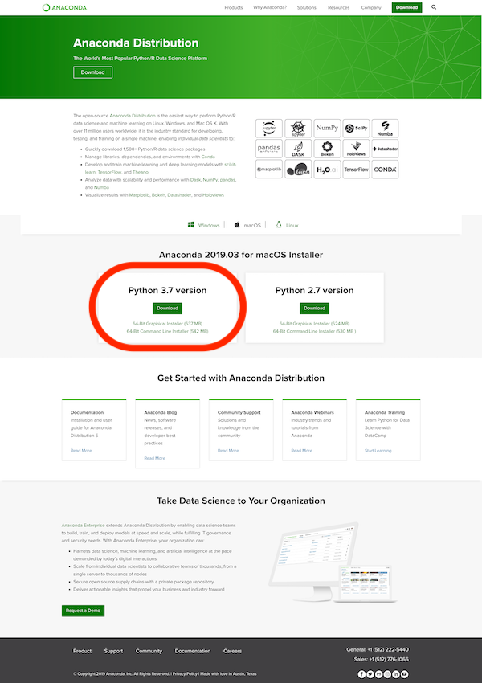
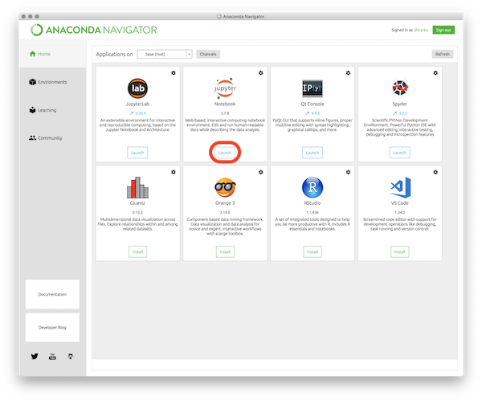

スマートフォンでの操作
スマートフォンを利用したドローン操作アプリのインストール
- "tello"AppをAppStoreやGooglePlayで検索
- インストールする
- 側面の電源ボタンを長押しし，ドローンの電源を入れる
- 電源投入すると，正面カメラ脇のLEDが点滅する．


参考ページ：話題のトイドローンTelloの初期設定と使い方
HMDを使ったVR飛行
画面表示をVRモードに変更することでHMDを利用した飛行が可能
Scratchを利用したシークエンス飛行
telloをscratchで操作するには，ローカル（自分のPC）に2.0環境(PreviousVer.現行は3.0)をインストールし，Node.jsを利用して通信する.
- Scratchオフラインエディタのインストール 
- Node.jsのインストール 
- Droneサポートファイルの導入 
参考動画：ScratchでRYZE Telloをプログラミング（Mac編）
Pythonを利用したシークエンス飛行
Pythonを利用してtelloを操作する．
今回はAnacondaという様々なライブラリをセットにしたパッケージ．
- Anacondaのダウンロードページに行き，3系をダウンロード 
- インストール
- アプリケーションにAnacondaNavigatorというエイリアスができる
- AnacondaNavigatorを立ち上げ，JupyterNotebookをlaunch 